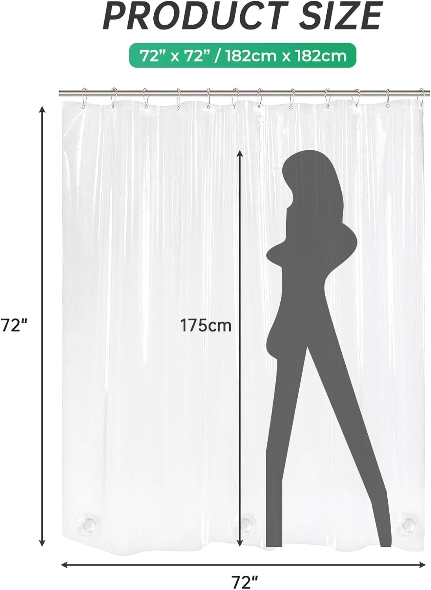
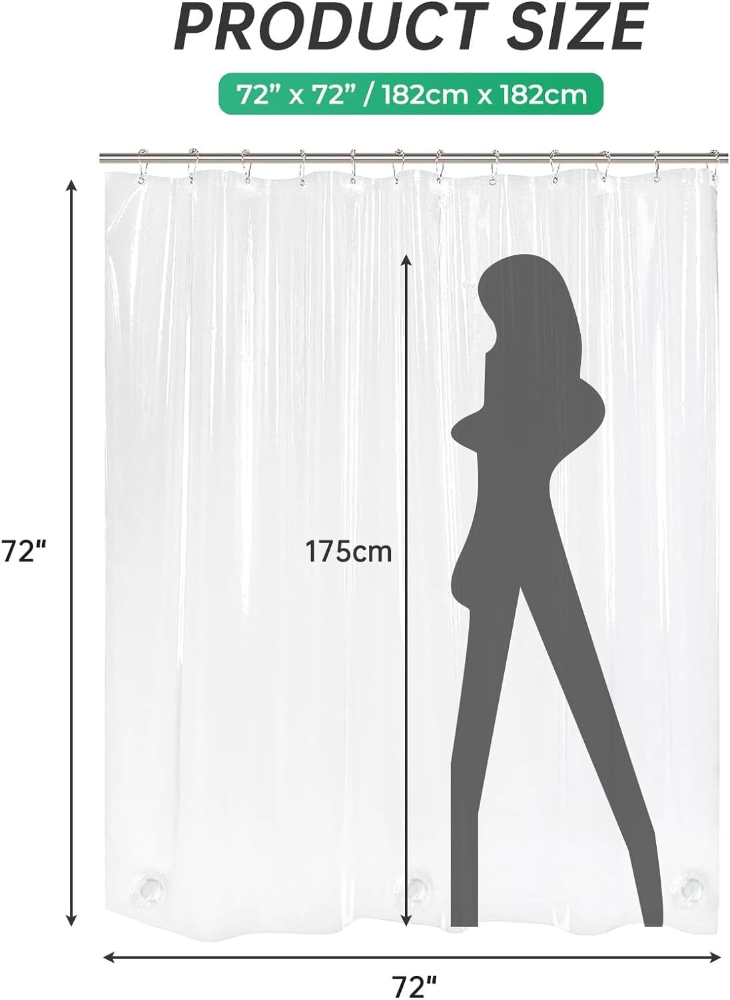
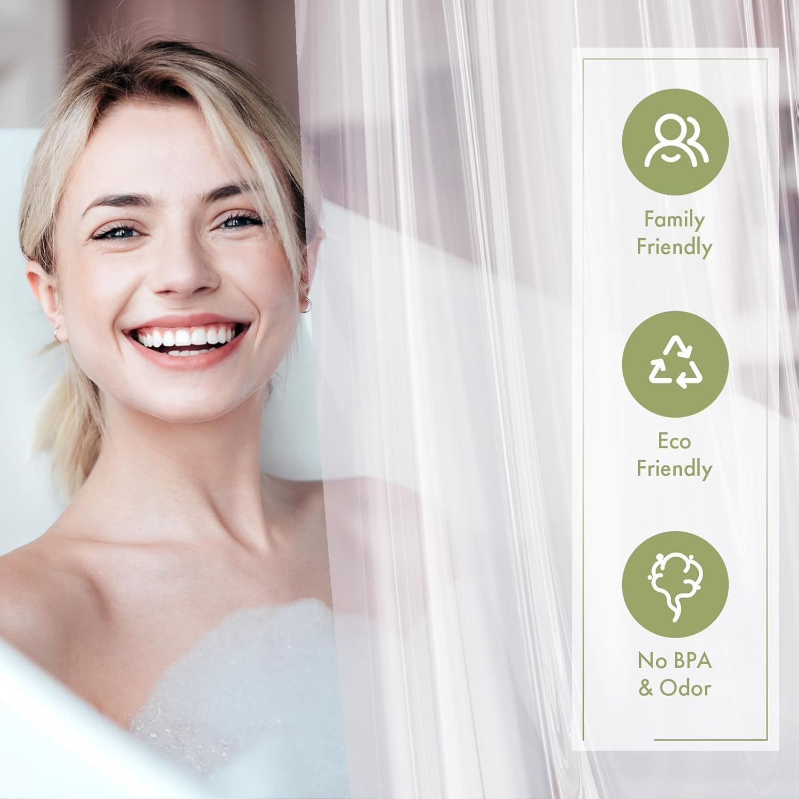
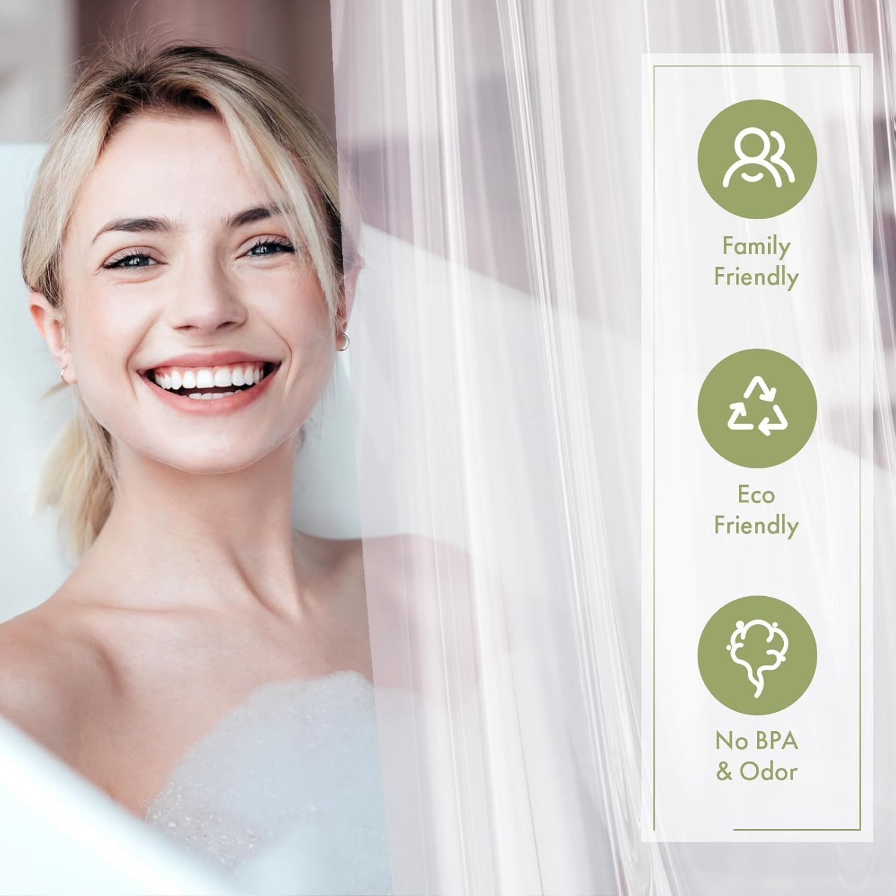

Sarah Mitchell
Home & Bath Editor | 8+ years covering bathroom products and home textiles
All recommendations based on rigorous product research and customer review analysis.

Choosing the right shower curtain material is the single most important decision for your bathroom's look, feel, and air quality

AmazerBath White Waffle Shower Curtain (Best Fabric)
Hotel-quality waffle weave, heavy-weight polyester, machine washable, 1-2 year lifespan
Walk into any home goods store or scroll through Amazon's shower curtain section, and you will face the same fundamental question that confronts every bathroom shopper: fabric, vinyl, or PEVA? These three materials dominate the shower curtain market, and while they all serve the same basic purpose — keeping water inside your shower — the differences between them are significant enough to impact your daily comfort, your bathroom's appearance, and even your family's health.
The shower curtain material debate is not just about aesthetics or waterproofing. It touches on topics like indoor air quality (vinyl curtains can off-gas harmful chemicals), environmental sustainability (some materials are far more eco-friendly than others), long-term cost (a cheap curtain that needs replacing every three months is not actually cheap), and maintenance requirements (some materials practically take care of themselves while others demand regular attention). Making an informed choice requires understanding what each material actually is, how it performs under daily use, and which trade-offs matter most to your specific situation.
In this comprehensive comparison guide, we break down fabric, PEVA, and vinyl shower curtains across every dimension that matters. We have tested representative products from each category, analyzed hundreds of thousands of verified customer reviews, and consulted material safety data to give you the clearest, most actionable comparison available anywhere. Whether you are outfitting a new bathroom, replacing a worn-out curtain, or simply wondering if there is a better option out there, this guide will help you make the right call.
By the end of this article, you will know exactly which material suits your priorities — and we have included our top product recommendation for each material type so you can take action immediately.
What We Compare in This Guide
- Waterproof performance: How effectively each material keeps water contained
- Durability and lifespan: How long each material lasts with regular use
- Health and safety: Chemical off-gassing, toxicity, and indoor air quality impact
- Style and aesthetics: Visual appeal, texture, and design versatility
- Maintenance: Cleaning requirements, mildew resistance, and ease of care
- Value: True cost of ownership including replacement frequency
Table of Contents
Understanding Shower Curtain Materials
Before diving into the detailed analysis of each material, it helps to understand what these three options actually are at a fundamental level. The terminology can be confusing — especially the difference between vinyl and PEVA, which many shoppers assume are the same thing — so let us clarify the landscape.
Fabric shower curtains are made from woven textiles, most commonly polyester, though you will also find cotton, linen, and blended options. Polyester dominates the market because it naturally resists water, dries quickly, and holds up to machine washing far better than natural fibers. Fabric curtains range from thin, utilitarian liners to thick, luxurious decorative curtains with waffle weave, slub textures, or embroidered details. They represent the premium end of the shower curtain spectrum in terms of aesthetics and durability.
PEVA (polyethylene vinyl acetate) is a thermoplastic polymer that has largely replaced traditional vinyl in the shower curtain market. The key distinction is that PEVA is chlorine-free, making it a safer and more environmentally responsible alternative to PVC. PEVA curtains are fully waterproof, lightweight, and available in clear, frosted, or printed designs. They serve primarily as functional liners, though higher-end PEVA curtains can work as standalone shower curtains in minimalist bathrooms.
Vinyl (PVC, or polyvinyl chloride) is the traditional plastic material that most people think of when they picture a shower curtain liner. PVC is cheap to manufacture and 100% waterproof, but it comes with significant downsides: it contains chlorine, releases volatile organic compounds (VOCs) when new, and contributes to indoor air pollution. That distinctive "new shower curtain smell" that gives some people headaches is almost always coming from a PVC vinyl product. While still available and widely sold, vinyl is increasingly being replaced by PEVA as consumers become more health-conscious.
Each material occupies a different niche in the market, and understanding their core characteristics is essential to making the right choice for your bathroom. Let us examine each one in detail.
Fabric Shower Curtains: In-Depth Analysis
Fabric shower curtains have undergone a quiet revolution over the past decade. What was once reserved for high-end bathroom boutiques has become the mainstream choice for homeowners and renters who care about both aesthetics and performance. The rise of affordable polyester weaves means you can now get a fabric curtain that looks like it belongs in a luxury hotel for under $20 — a price point that would have been unthinkable just five years ago.
The defining advantage of fabric is visual sophistication. A well-chosen fabric curtain transforms a bathroom from purely functional to genuinely stylish. The texture, drape, and weight of woven fabric create a sense of quality and intentionality that plastic materials simply cannot replicate. Whether you prefer the classic elegance of a waffle weave, the organic warmth of a slub texture, or the artisanal charm of a boho design with tassels, fabric gives you design options that are impossible with PEVA or vinyl. Since the shower curtain is often the largest visual element in a bathroom, this aesthetic advantage has an outsized impact on the overall room feel.
In terms of waterproofing, fabric curtains fall into two categories. Standard decorative fabric curtains are water-resistant but not fully waterproof, meaning they repel splashes and light spray but will eventually let water through during a prolonged shower. These curtains work best when paired with a separate liner — a thin PEVA or fabric liner that handles the waterproofing while the outer curtain provides the visual appeal. The second category includes fabric curtains with built-in waterproof backing, which combine the look of fabric with the water-blocking capability of a liner in a single product. These hybrid designs have become increasingly popular because they eliminate the hassle of managing two separate layers.
Durability is where fabric truly shines. A quality polyester fabric curtain can last one to two years or longer with basic maintenance, which typically means machine washing once a month on a gentle cycle with cold water. The fabric does not crack, stiffen, or yellow the way plastic materials do over time. It maintains its texture, color, and drape through dozens of wash cycles. Many long-term owners report that their fabric curtains look nearly as good after a year as they did on day one — a claim that no PEVA or vinyl curtain can realistically make.
On the maintenance front, fabric curtains are generally easier to care for than many people expect. Most are fully machine washable and dry quickly when spread out on the rod after showering. The key is choosing polyester over natural fibers like cotton or linen, which absorb water and are far more susceptible to mildew. Polyester resists mildew naturally, and many manufacturers apply additional antimicrobial treatments to further extend the curtain's clean lifespan between washes.
The primary downside of fabric is cost. While prices have dropped significantly, fabric curtains still cost more than basic PEVA or vinyl liners — typically ranging from $12 to $25 for a standard size. When you factor in the potential need for a separate liner (another $6 to $10), the total investment can reach $20 to $35. However, when you calculate the cost per month of use, fabric often comes out ahead because it lasts two to four times longer than plastic alternatives.
Our Top Fabric Pick: AmazerBath White Waffle Shower Curtain
AmazerBath White Waffle Shower Curtain
 

The AmazerBath White Waffle is our top pick for the fabric category because it embodies everything great about fabric shower curtains at an accessible price point. The heavy-weight polyester waffle weave creates a luxurious, hotel-inspired look that instantly elevates any bathroom. The textured surface is not just decorative — the waffle pattern creates micro-channels that encourage water to bead and run off, providing surprising water resistance even without a liner. For full waterproof protection, pair it with any standard liner and you have a system that looks premium and performs flawlessly.
Across nearly 25,000 verified reviews, the AmazerBath maintains an impressive 4.6 out of 5 rating. Customers consistently highlight the substantial fabric weight that drapes beautifully without blowing around, the easy machine-washable maintenance, and the genuine hotel-quality appearance at a fraction of the cost. Multiple reviewers note that guests frequently ask where they purchased their "expensive-looking" shower curtain — and are stunned when they learn it costs under $16.
- Material: Heavy-weight polyester waffle weave
- Size: 72" x 72" — standard bathtub/shower combo fit
- Waterproofing: Water-resistant weave; best paired with a liner
- Machine washable: Yes, gentle cycle cold water
- Grommets: Rust-resistant metal grommets, fits standard hooks
- Colors: White, grey, sage, navy, and more
Pros
- Luxurious hotel-quality waffle texture
- Heavy fabric drapes beautifully, stays in place
- Machine washable — easy maintenance
- Lasts 1-2 years with proper care
- Under $16 — exceptional value for fabric
Cons
- Requires a separate liner for full waterproofing
- White color may show soap residue over time
- Higher upfront cost than PEVA or vinyl
PEVA Shower Curtains: In-Depth Analysis
PEVA has become the default material for anyone who needs a straightforward, fully waterproof shower curtain or liner without the health concerns associated with traditional vinyl. Standing for polyethylene vinyl acetate, PEVA emerged as a direct response to growing consumer awareness about the toxic chemicals in PVC products. It delivers the same fundamental waterproof performance as vinyl but without the chlorine, without the harsh chemical odors, and without the guilt of introducing harmful plastics into your bathroom environment.
The waterproofing capability of PEVA is its headline feature. Unlike fabric, which ranges from water-resistant to waterproof depending on the treatment, PEVA is inherently 100% waterproof. Water cannot penetrate the material, period. This makes PEVA the default choice for shower curtain liners — the inner barrier that does the heavy lifting of water containment while a decorative outer curtain handles the aesthetics. Many people also use PEVA curtains as standalone solutions, particularly in guest bathrooms, children's bathrooms, or situations where pure functionality matters more than visual design.
From a health and safety perspective, PEVA represents a massive improvement over PVC vinyl. When you open a new PEVA curtain, you will notice that it has little to no chemical odor — a stark contrast to the headache-inducing smell that accompanies new PVC curtains. This is because PEVA does not contain chlorine and does not release volatile organic compounds (VOCs) into your bathroom air. For families with young children, people with chemical sensitivities, or anyone who simply does not want to breathe in plastic fumes while showering, PEVA provides peace of mind that vinyl cannot match.
The trade-offs with PEVA center around durability and aesthetics. In terms of lifespan, PEVA curtains typically last six to twelve months under regular daily use before they begin to show signs of wear — stiffening, discoloration, persistent mildew that washing cannot fully remove, or small tears along the grommet holes. This is significantly shorter than a quality fabric curtain, which routinely lasts one to two years or more. The good news is that PEVA curtains are inexpensive enough that replacing them twice a year still costs less than a single premium fabric curtain — typically under $20 per year for a top-rated liner.
Aesthetically, PEVA is functional rather than decorative. Most PEVA curtains come in clear, frosted, or simple solid colors. While some manufacturers have introduced printed PEVA designs, the material does not lend itself to the textured, sophisticated look that fabric achieves. PEVA curtains hang flat rather than draping, and they lack the weight and dimension of woven textiles. For a bathroom where appearance is a priority, PEVA works best as a behind-the-scenes liner paired with a decorative fabric outer curtain.
Maintenance is straightforward but requires consistency. PEVA curtains should be spread fully across the rod after each shower to dry, and machine-washed monthly on a gentle cycle with cold water. Avoid bleach, which breaks down PEVA material, and skip the dryer — hang to dry immediately. Many higher-quality PEVA curtains, like the LiBa, include magnetic bottom hems that keep the curtain flush against the tub, reducing splash-out and minimizing the damp surfaces where mildew likes to form.
The bottom line on PEVA: it is the smart choice for anyone who prioritizes waterproof performance and health safety at the lowest possible price. It may not win any design awards, but it does its job reliably, safely, and affordably — and when paired with a decorative fabric curtain, it creates a two-layer system that checks every box.
Our Top PEVA Pick: LiBa Waterproof PEVA Shower Curtain
LiBa Waterproof PEVA Shower Curtain


With over a quarter of a million reviews and a rock-solid 4.5 rating, the LiBa PEVA is the most popular shower curtain liner in the world — and it earned that position through sheer reliability. At just $8.59, it delivers everything you need from a PEVA curtain: complete waterproof protection, non-toxic chlorine-free material, no chemical smell out of the package, and a magnetized bottom hem that keeps the curtain flush against the tub wall. The frosted design provides privacy while allowing light to pass through, preventing that dark, claustrophobic feeling that opaque curtains create.
What makes the LiBa stand out from the hundreds of other PEVA liners on the market is the heavy-gauge material thickness. Cheaper PEVA curtains feel flimsy and tear easily at the grommet holes, but the LiBa has enough weight and substance to hang properly and resist damage from regular use. Multiple reviewers report getting 8 to 12 months of daily use before needing a replacement, which works out to roughly $0.70 to $1.00 per month — an extraordinary value for a fully waterproof, non-toxic bathroom essential. The curtain is also machine washable on a delicate cycle, allowing you to extend its life even further.
- Material: PEVA — non-toxic, chlorine-free, no chemical odor
- Size: 72" x 72" — standard fit
- Waterproofing: 100% waterproof — standalone capability
- Magnets: Weighted magnetic hem keeps curtain in place
- Machine washable: Yes, delicate cycle
- Grommets: Rust-resistant, compatible with all standard hooks
Pros
- Under $9 — unbeatable value
- 254,000+ reviews — most-proven liner available
- Non-toxic PEVA, no chemical smell
- Magnetic bottom hem for secure positioning
- Fully waterproof — works alone or with outer curtain
Cons
- Not decorative — functional liner appearance
- PEVA material can stiffen over time
- Needs replacement every 6-12 months

The material you choose for your shower curtain affects everything from bathroom aesthetics to daily comfort and air quality
Vinyl/PVC Shower Curtains: In-Depth Analysis
Vinyl — specifically PVC (polyvinyl chloride) — is the original plastic shower curtain material, and it still holds a significant share of the market in 2026 despite growing competition from PEVA and fabric alternatives. Understanding vinyl requires an honest assessment of both its strengths and its increasingly well-documented drawbacks, because this is the one material in our comparison where the health implications genuinely matter.
On the positive side, vinyl delivers absolute waterproof performance at the lowest possible cost. PVC shower curtain liners can be found for as little as $5 to $7, making them the cheapest option in every price comparison. The material is completely impermeable to water, durable enough to withstand months of daily use, and widely available in clear, frosted, and colored options. For decades, vinyl was the default liner material in hotels, rental apartments, and homes across the country — and millions of people continue to buy PVC curtains without issue.
However, the health concerns surrounding PVC are real and increasingly well-documented. Vinyl shower curtains contain chlorine as a fundamental component of the polyvinyl chloride molecule. When new, PVC curtains release volatile organic compounds (VOCs) — the chemicals responsible for that distinctive "new shower curtain smell" that many people find unpleasant or even headache-inducing. A widely cited study found that PVC shower curtains can release over 100 different VOCs into indoor air, some of which are classified as hazardous air pollutants. The off-gassing is most intense when the curtain is new and when it is heated by shower steam, which is precisely when you are standing next to it in an enclosed space with limited ventilation.
The environmental impact of PVC is another consideration. Vinyl is difficult to recycle, does not biodegrade, and its production involves chlorine gas — one of the most environmentally damaging industrial chemicals. When PVC products eventually end up in landfills or incinerators, they can release dioxins and other persistent organic pollutants. While a single shower curtain represents a tiny fraction of global PVC production, the availability of equally affordable, equally waterproof PEVA alternatives makes it hard to justify choosing PVC on environmental grounds.
In terms of durability, vinyl performs comparably to PEVA — roughly six to twelve months of regular use before the material begins to deteriorate. Over time, PVC curtains tend to stiffen, crack, and develop a yellowish discoloration that washing cannot reverse. They are also somewhat more prone to mildew than PEVA because the material's surface provides a slightly better environment for mold growth. Like PEVA, vinyl curtains can be machine washed on a gentle cycle, though frequent washing accelerates the stiffening process.
Aesthetically, vinyl and PEVA are virtually identical to the casual observer. Both come in clear, frosted, and solid-color options, and both hang flat rather than draping like fabric. The visual difference between a vinyl liner and a PEVA liner is negligible — the meaningful differences are all about what is happening at the chemical level rather than the visual level.
Our honest assessment: there is very little reason to choose PVC vinyl over PEVA in 2026. PEVA matches vinyl's waterproof performance at a similar price point while eliminating the chemical odor, the VOC off-gassing, and the environmental concerns. The only scenario where vinyl might make sense is if you need the absolute cheapest possible option and cannot find a PEVA alternative at the same price — but even then, the difference is typically just one or two dollars. For that marginal savings, you are accepting a less healthy product in a space where you and your family are exposed to it daily.
Our Top Vinyl/Clear Pick: AmazerBath Clear Shower Curtain Liner
AmazerBath Clear Shower Curtain Liner
 


The AmazerBath Clear Shower Curtain Liner represents the vinyl category at its best — a reliable, fully transparent, 100% waterproof liner at the lowest price point in our comparison. At just $6.99 with over 64,000 reviews and a 4.4 rating, it delivers the core function of keeping water inside your shower without any frills or pretension. The crystal-clear design is ideal for smaller bathrooms where a frosted or opaque liner would make the space feel enclosed, and it works perfectly behind any decorative outer curtain.
The AmazerBath clear liner features reinforced grommets that resist tearing — a common failure point for budget liners — and a weighted bottom hem that keeps the curtain hanging straight against the tub wall. The material is thick enough to feel substantial without being stiff, and it provides excellent clarity that maintains the open, airy feel of a glass shower enclosure at a fraction of the cost. Reviewers consistently praise the no-fuss functionality and the surprising longevity, with many reporting six to nine months of daily use before replacement.
It is worth noting that while this product is marketed as a clear liner and performs comparably to vinyl options, buyers who are sensitive to chemical odors should consider the LiBa PEVA alternative for just $1.60 more. For those who prioritize the lowest upfront cost and maximum clarity, the AmazerBath clear liner remains a solid, well-reviewed option backed by a trusted brand name.
- Material: Clear vinyl/plastic liner
- Size: 72" x 72" — standard fit
- Waterproofing: 100% waterproof — complete water containment
- Transparency: Crystal clear — maximizes light and space
- Machine washable: Yes, delicate cycle cold water
- Grommets: Reinforced rust-resistant grommets
Pros
- Lowest price at $6.99
- Crystal-clear transparency maximizes light
- 64,000+ reviews confirm reliability
- Reinforced grommets resist tearing
- Trusted AmazerBath brand
Cons
- Potential chemical odor when new
- PVC material raises health and environmental concerns
- Shorter lifespan than fabric — 6-9 months typical
Side-by-Side Comparison: Fabric vs PEVA vs Vinyl
The table below summarizes every key difference between the three shower curtain materials. Use this as a quick reference when making your final decision.
| Feature | Fabric (Polyester) | PEVA | Vinyl (PVC) |
|---|---|---|---|
| Top Product | AmazerBath Waffle | LiBa PEVA | AmazerBath Clear Liner |
| Price | $15.99 | $8.59 | $6.99 |
| Rating | |||
| Reviews | 24,938 | 254,672 | 64,327 |
| Waterproof | Water-resistant (needs liner) | 100% waterproof | 100% waterproof |
| Lifespan | 1-2 years | 6-12 months | 6-9 months |
| Annual Cost | ~$16/year | ~$9-17/year | ~$9-14/year |
| Chemical Odor | None | None / minimal | Moderate to strong |
| Toxicity | Non-toxic | Non-toxic, chlorine-free | Contains chlorine, may release VOCs |
| Eco-Friendly | Good (long-lasting) | Better (chlorine-free) | Poor (chlorine, hard to recycle) |
| Machine Washable | Yes — holds up well | Yes — gentle cycle | Yes — gentle cycle |
| Mildew Resistance | Good (with treated polyester) | Moderate | Fair |
| Aesthetics | Excellent — many textures and designs | Basic — clear, frosted, or solid | Basic — clear, frosted, or solid |
| Drape Quality | Excellent — weighted, elegant | Fair — hangs flat | Fair — hangs flat |
| Clings to Body | No | Sometimes | Often |
| Needs Liner | Usually yes (unless has built-in backing) | No — is the liner | No — is the liner |
| Best Use Case | Decorative outer curtain | Waterproof liner or standalone | Budget waterproof liner |
| Our Verdict | Best Overall | Best Value | Use PEVA Instead |
Get Our #1 Overall Pick — AmazerBath Waffle ($15.99)Key takeaway: Fabric wins on aesthetics, durability, and long-term value. PEVA wins on waterproof performance and health safety at a budget price. Vinyl is the cheapest upfront but loses on health, environmental impact, and longevity. For the best of all worlds, pair a fabric curtain with a PEVA liner.
Which Material Should You Choose? A Decision Guide
The "best" shower curtain material depends entirely on your priorities, your bathroom setup, and your budget. Rather than declaring one universal winner, here is a scenario-based guide that matches each material to the situations where it excels.
Choose Fabric If...
- Aesthetics are a top priority. If you want your shower curtain to serve as a design element that enhances your bathroom's overall look, fabric is the only real option. The texture, drape, and weight of woven polyester create a sense of quality that plastic materials cannot match.
- You want long-term value. A $16 fabric curtain that lasts 18 months costs less per month than a $9 PEVA liner that needs replacing every 8 months. When you factor in the longer lifespan, fabric often wins the total cost of ownership calculation.
- You prefer low-maintenance care. Fabric curtains (especially polyester) are machine washable, resist mildew well, and maintain their appearance through dozens of wash cycles. They are more forgiving of occasional neglect than PEVA or vinyl.
- You are willing to use a two-curtain system. The ideal bathroom setup for most people is a decorative fabric outer curtain paired with a PEVA or fabric liner. If you are willing to manage two layers, fabric delivers the best possible combination of form and function.
- You are renovating or upgrading your bathroom. If you are investing in your bathroom's appearance, a fabric curtain completes the design. It signals intentionality and care in a way that a plastic liner never can.
Our Fabric Recommendation
AmazerBath White Waffle Shower Curtain — $15.99 — Hotel-quality waffle weave with 24,938 reviews at 4.6/5. The gold standard for fabric shower curtains.
Choose PEVA If...
- Budget is your primary concern. At under $9 for the top-rated option, PEVA delivers genuine waterproof protection at a price that is hard to beat. If you need a functional curtain or liner and every dollar counts, PEVA is the clear winner.
- You need a dedicated waterproof liner. If you already have a decorative outer curtain and need something behind it to handle the water, a PEVA liner is the standard recommendation. It is what most interior designers and bathroom experts recommend for the inner layer of a two-curtain system.
- Health and safety matter. For families with young children, people with chemical sensitivities, or anyone concerned about indoor air quality, PEVA's chlorine-free, low-VOC composition provides genuine peace of mind. You will not smell chemicals when you open the package.
- You are outfitting a guest bathroom, rental, or temporary space. When you need a quick, affordable solution that works reliably and can be replaced without guilt, PEVA is perfect. It is the "set it and forget it" option for bathrooms where you do not need to make a design statement.
- You prefer simplicity. A single PEVA curtain handles both the waterproofing and the privacy aspects of a shower curtain. No need for a second layer, no hooks to manage for two curtains, and no complexity.
Our PEVA Recommendation
LiBa Waterproof PEVA Shower Curtain — $8.59 — The world's most popular shower curtain liner with 254,672 reviews at 4.5/5. Non-toxic, magnetic hem, proven reliability.
Choose Vinyl Only If...
- You need the absolute cheapest option available. Vinyl liners can be found for $5 to $7, making them the lowest-cost entry point in the shower curtain market. If you are on an extremely tight budget and the $1 to $2 difference between vinyl and PEVA matters, vinyl will still keep water inside your shower.
- You need maximum transparency. Clear vinyl liners provide slightly better optical clarity than frosted PEVA, which can matter in small, dark bathrooms where every bit of light transmission helps. The AmazerBath clear liner excels in this specific use case.
- You are using it temporarily. If you need a shower liner for a short-term situation — a month or two in a temporary apartment, a quick fix while you wait for your preferred curtain to arrive — vinyl gets the job done cheaply.
Our Vinyl Recommendation (with a caveat)
AmazerBath Clear Shower Curtain Liner — $6.99 — If you must go vinyl, this is the best option with 64,327 reviews at 4.4/5. But we recommend spending $1.60 more for the LiBa PEVA instead.
The Ultimate Combination: Fabric + PEVA
If you want the absolute best shower curtain setup, the answer is not choosing one material over the others — it is combining two. The fabric outer curtain + PEVA liner combination gives you everything: the visual sophistication and design versatility of fabric, paired with the bulletproof waterproof protection of PEVA. This is the system used by high-end hotels, recommended by interior designers, and preferred by bathroom renovation experts.
For our specific recommendation, pair the AmazerBath Waffle ($15.99) with the LiBa PEVA ($8.59). For a total investment of $24.58, you get a hotel-quality bathroom setup backed by nearly 280,000 combined reviews. The fabric curtain handles the aesthetics and longevity, while the PEVA liner handles the waterproofing — each material doing what it does best.
Frequently Asked Questions
PEVA and fabric polyester are the healthiest options. PEVA is chlorine-free and does not release harmful VOCs into your bathroom air. Fabric polyester curtains are also non-toxic and chemical-free. The material to avoid is PVC vinyl, which contains chlorine and can off-gas volatile organic compounds, particularly when heated by shower steam. If health is your top priority, choose a PEVA liner like the LiBa ($8.59) or a fabric curtain like the AmazerBath Waffle ($15.99).
Yes, PEVA is better than PVC vinyl in nearly every measurable way. Both materials are 100% waterproof and similarly priced, but PEVA is chlorine-free, has no chemical smell out of the package, and does not release harmful VOCs. Vinyl contains chlorine and can off-gas chemicals that contribute to headaches and poor indoor air quality. The performance difference is negligible, but the health and environmental advantages of PEVA are significant. We recommend PEVA over vinyl in all situations.
Most standard fabric shower curtains are water-resistant but not fully waterproof, so they benefit from a separate waterproof liner behind them. However, some fabric curtains include built-in waterproof backing that eliminates the need for a separate liner. For decorative fabric curtains — especially textured styles like waffle weave or boho designs — we recommend pairing with a PEVA liner for the best combination of style and waterproof performance. The two-layer system also extends the life of both the curtain and the liner.
PEVA shower curtains typically last 6 to 12 months before needing replacement due to stiffening, discoloration, or mildew that washing cannot remove. Fabric polyester curtains last significantly longer — 1 to 2 years or more with monthly washing and proper drying after each use. While PEVA costs less upfront, the longer lifespan of fabric means it often provides better value per month of use. A $16 fabric curtain lasting 18 months costs about $0.89 per month, while a $9 PEVA liner lasting 8 months costs about $1.13 per month.
Yes, both PEVA and vinyl curtains can be machine washed on a delicate cycle with cold water. Use a mild detergent and avoid bleach, which breaks down the plastic material. Do not put them in the dryer — hang to dry immediately to prevent cracking or warping. Adding a couple of bath towels to the wash load helps scrub the curtain surface gently. Monthly washing extends the usable life of both materials and prevents mildew buildup.
Fabric polyester curtains are generally the most eco-friendly mainstream option because they last the longest, reducing waste from frequent replacements. PEVA is a better environmental choice than PVC vinyl since it is chlorine-free and does not release harmful chemicals. For maximum sustainability, some brands offer organic cotton or hemp shower curtains, though these require more maintenance to prevent mildew and are typically more expensive. If using PEVA, choosing a high-quality option like the LiBa and extending its life through monthly washing minimizes your environmental footprint.
A strong chemical smell from a new shower curtain is almost certainly caused by PVC vinyl material off-gassing volatile organic compounds (VOCs). This smell can persist for days or even weeks and may cause headaches, nausea, or respiratory irritation in sensitive individuals. To avoid this entirely, choose PEVA or fabric curtains, which have minimal to no odor. If you already have a PVC curtain, unpackage it and let it air out in a well-ventilated area (outdoors if possible) for 24 to 48 hours before hanging it in your bathroom. Consider replacing it with a PEVA alternative at your earliest convenience.
Ready to Choose Your Perfect Shower Curtain Material?
Our top-rated picks for each material type — all backed by thousands of verified reviews and our expert testing.
All Amazon Prime eligible | 30-day returns | Verified customer reviews